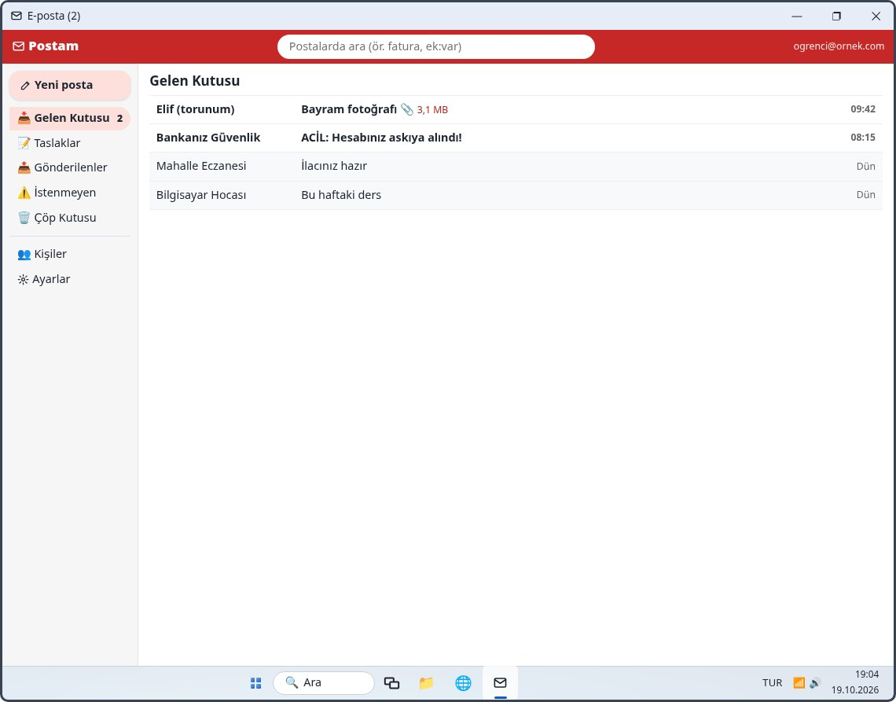

9. Hafta: E-posta
Alıştırmalar
Bu hafta
| 1 E-posta: okuma, yanıtlama, ek | 35 dk |
|---|---|
| 2 Gmail ve Hotmail (Outlook) | 25 dk |
| 3 Yanıtla, ilet, Bilgi (Cc), Gizli (Bcc) | 30 dk |
| 4 Kişiler, imza ve istenmeyenler | 30 dk |
| 5 Gelen belgeyi klasöre taşımak | 25 dk |
| 6 Büyük dosyayı buluttan paylaşmak | 35 dk |
|---|---|
| 7 “Şifremi unuttum!” | 25 dk |
| 8 E-posta kutusu doldu! | 20 dk |
| 9 E-posta parkuru | 20 dk |
Hafta sonunda: ödev (gerçek bilgisayarda sekiz küçük görev) ve 12 soruluk test.
Ders 1 · E-posta

Ders 1 · E-posta
| Okumak | Gelen Kutusu’nda postaya tıklayın: Elif’ten “Bayram fotoğrafı” |
|---|---|
| ⬇ İndir | Eki bilgisayara kaydeder (İndirilenler klasörü) |
| ↩ Yanıtla | Gönderene cevap; Kime ve Konu kendiliğinden dolar. Yazıp ➤ Gönder |
| ✏ Yeni posta | Kime: elif@ornek.com, Konu: Bahçemiz, 📎 Dosya ekle → Resimler’den çiçekler.jpg → Aç → Gönder |
| ⚠ İstenmeyen | “ACİL: Hesabınız askıya alındı!” gibi sahte postayı buraya. Bağlantısına tıklamayın |
Bankalar e-postayla şifre ya da kart numarası istemez.
Ders 2 · Gmail ve Hotmail
| Gmail | Google; adres @gmail.com. Google hesabı: Android, YouTube, Drive |
|---|---|
| Hotmail / Outlook | Microsoft; @hotmail.com, @outlook.com, @live.com. Microsoft hesabı: Windows, Office, OneDrive |
| Görünüş | Gmail: üstte sekmeler, etiketler. Outlook: soldaki klasörler |
| İstenmeyen posta | Gmail’de Spam, Outlook’ta Önemsiz E-posta |
Ders 3 · Yanıtla, ilet, Cc, Bcc
| ↩ Yanıtla | Yalnızca size yazana cevap |
|---|---|
| ↪ İlet | Postayı başka birine gönderir; Kime’yi siz yazarsınız |
| Bilgi (Cc) | Bilgisi olsun istediğiniz kişiler; herkes birbirinin adresini görür |
| Gizli (Bcc) | Alıcılar birbirini görmez; kalabalık duyuru için en güvenlisi |
| Birden çok adres | Noktalı virgülle ayrılır |
Ders 4 · Kişiler, imza, istenmeyenler
| ⚠ İstenmeyen | Şüpheli postalar buraya düşer; ara sıra bakın. Gerçek posta düştüyse ✔ İstenmeyen değil |
|---|---|
| 👥 Kişiler | Adres defteri: Fatma Teyze, fatma@ornek.com → Kaydet |
| Kime: ilk harfler | fat yazınca kayıtlı adres önerilir |
| ⚙ Ayarlar → İmza | Her postanın sonuna kendiliğinden eklenen yazı: ad, telefon |
Gönderen adresine bakın: .bel.tr belediyelere verilir. Perşembe günkü su kesintisi postası gerçekti.
Ders 5–6 · Belgeler ve büyük dosyalar
| 1 | Postadaki eki ⬇ İndir: önce İndirilenler’e düşer. |
|---|---|
| 2 | Belgeler’de Sağlık klasörü açın (sağ tık → Yeni → Klasör). |
| 3 | Ctrl + X → klasörde Ctrl + V ile taşıyın. |
| 4 | Adını anlaşılır yapın: tahlil sonucu ekim 2026.pdf. |
Tanımadığınız birinden gelen eki açmayın; .exe ve .zip eklere dikkat.
| Ek sınırı | Genellikle 20–25 MB; düğün videosu sığmaz |
|---|---|
| ☁ Bulut Depo → ⬆ Yükle | Dosyayı internetteki deponuza koyar |
| 🔗 Paylaş | 👥 Yalnızca eklediğim kişiler + elif@ornek.com → Bağlantı oluştur |
| ⧉ Bağlantıyı kopyala | Postaya Ctrl + V ile yapıştırıp gönderin |
| 🌐 Bağlantıya sahip herkes | Kişisel belgeler için kullanmayın |
Ders 7 · Şifre sıfırlama
| 1 | Giriş sayfasında şifre kutusunun altındaki Şifremi unuttum. |
|---|---|
| 2 | E-posta adresinizi yazıp Kod gönder. |
| 3 | SMS’le gelen 6 haneli kodu yalnızca bu sayfaya yazın → Doğrula. |
| 4 | Yeni şifreyi iki kez yazın: 8+ karakter, büyük-küçük harf, rakam; eskisi olmasın. |
| 5 | Yeni şifreyle giriş yapın. |
Telefonla arayıp “size gelen kodu söyleyin” diyen dolandırıcıdır. Kodu kimseye söylemeyin.
Ders 8 · E-posta kutusu doldu
| Arama kutusu | Konudaki, gönderendeki ya da yazıdaki bir kelime: elektrik |
|---|---|
| ek:var | Yalnızca ekli postalar (Gmail’de: has:attachment) |
| kimden:market | Bir kişinin ya da firmanın postaları (Gmail’de: from:) |
| büyük:10mb | Ekleri 10 MB’tan büyükler (Gmail’de: larger:10M) |
| Abonelikten çık | Reklam bültenlerini durdurur |
Ders 9 · Tekrar
Adresler: Ahmet (oğlunuz) ahmet@ornek.com, Elif (torununuz) elif@ornek.com. Süreler tutulur.
Özet
| ad@ornek.com | Türkçe harf ve boşluk olmaz; @ = AltGr + Q |
|---|---|
| Kalın · 📎 | Okunmamış · ekli posta |
| ⬇ İndir | Eki İndirilenler’e kaydeder |
| ↩ Yanıtla · ↪ İlet | Gönderene cevap · başkasına gönder |
| Bilgi (Cc) · Gizli (Bcc) | Herkes görür · kimse kimseyi görmez |
| 📝 Taslaklar | Yarım kalan postalar |
| ⚠ İstenmeyen | Spam; gerçekse “İstenmeyen değil” |
|---|---|
| 👥 Kişiler · İmza | Adres defteri · postanın sonu |
| ☁ Bulut Depo | Büyük dosyayı bağlantıyla paylaş |
| Şifremi unuttum | SMS kodu kimseye söylenmez |
| ek:var · kimden: · büyük:10mb | Postaları bulmak, yer açmak |
Ödev: kendi bilgisayarınızda sekiz küçük görev; ödev kâğıdı yazdırılabilir. Test: 12 soru, tekrar içindir.